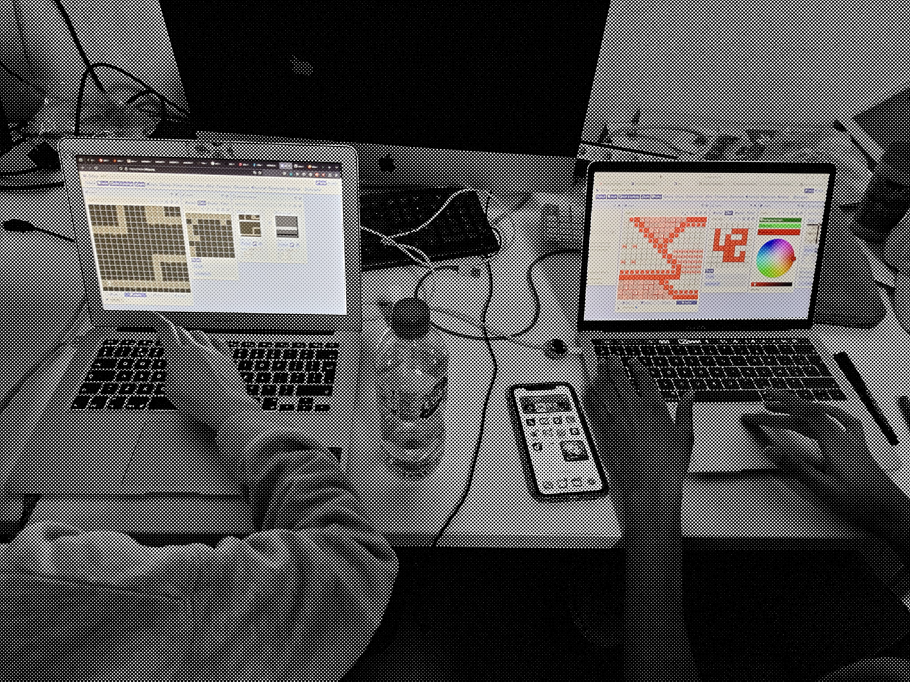
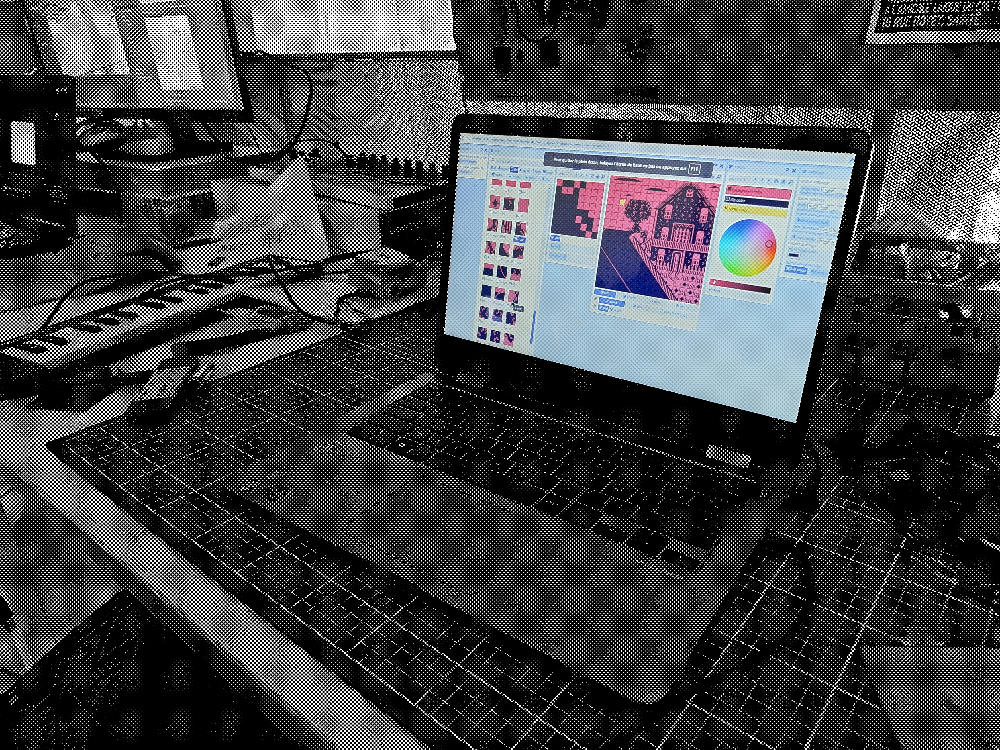
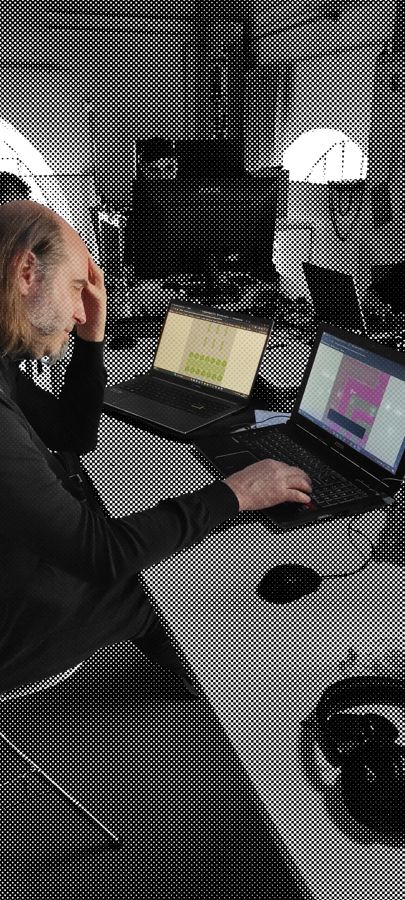
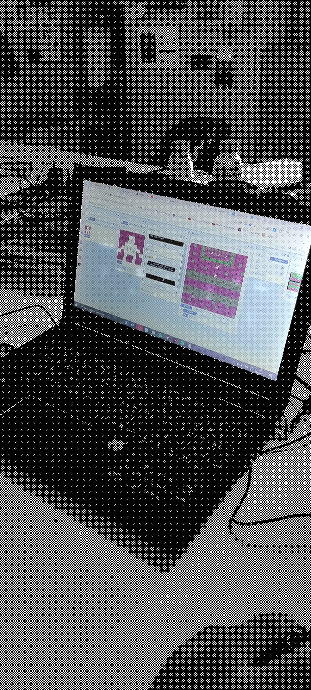
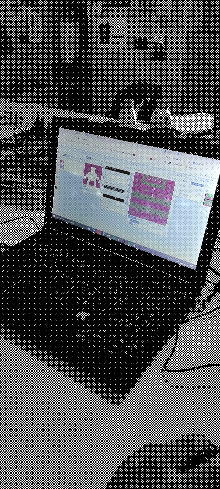
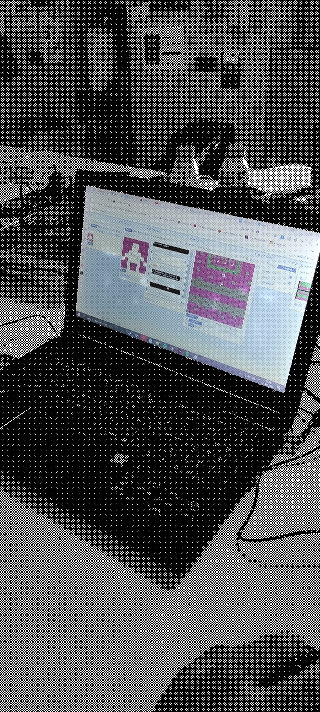

L'atelier a eu lieu sur la plateau numérique de l'ESADSE. Les étudiants étaient libres de travailler sur leurs odinateurs personnels ou sur les ordinateurs disponibles. En plus de phases de recherche et d'exploration de l'outil, des phases de jeux et une phase de test ont permis aux étudiants de se confronter à différentes écritures. Les jeux terminés ont ensuit été exportés au format web (.html) et peuvent être partagés ou modifiés par les étudiants. Photos de Benoit Quéron et David-Olivier Lartigaud.





 

